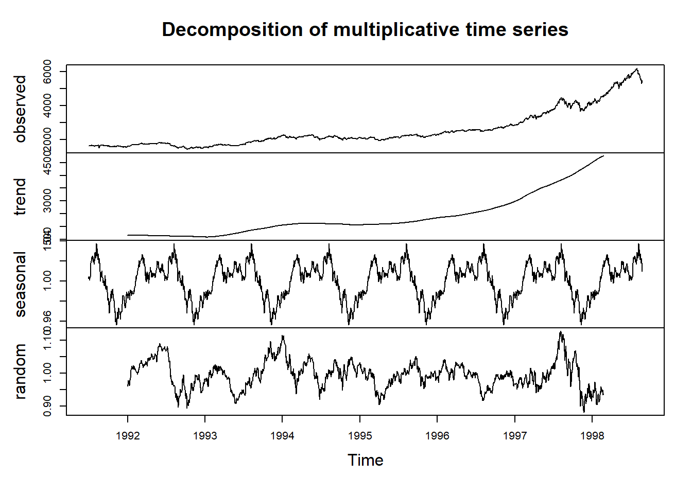
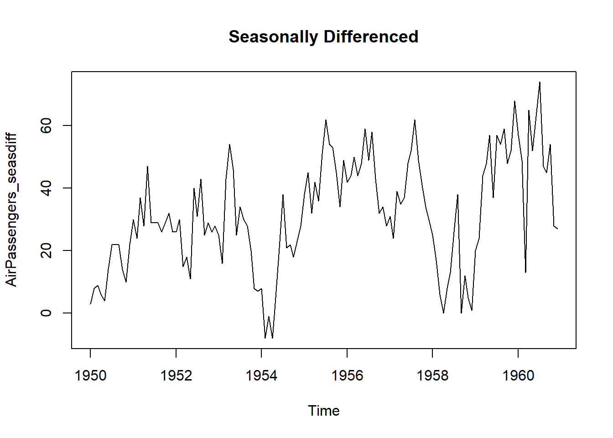
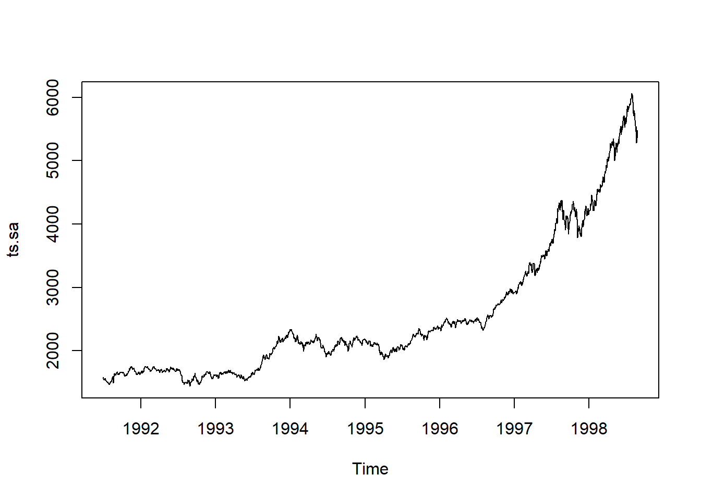
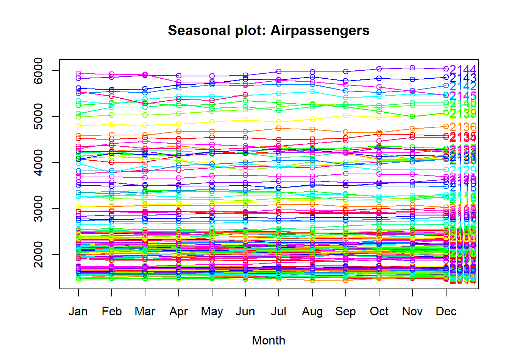
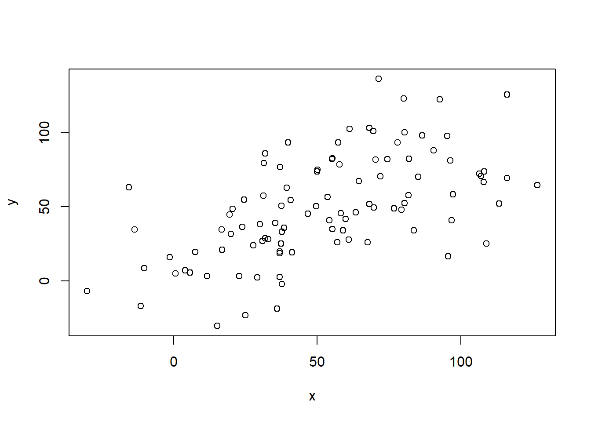
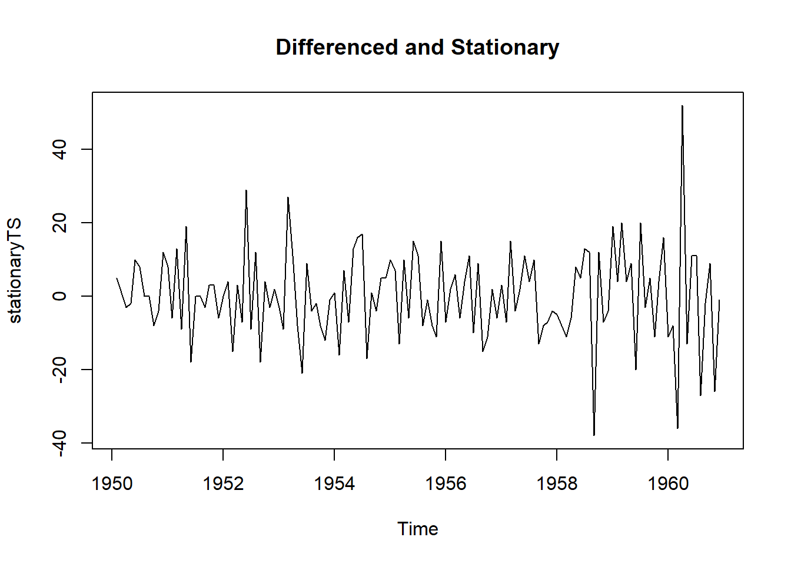

Chapter 2 Time series basics
2.1 What is a Time Series
2.1.1 Definition
Any metric that is measured over regular time intervals makes a Time Series (examples: weather data, stock prices, census analysis, budgetary analysis…). We can define a time series as a series of data points indexed in time order. It is a sequence taken at successive equally spaecd points in time, a sequence of discrete-time data.
The purpose of time series analysis is generally twofold: to understand or model the stochastic mechanisms that gives rise to an observed series and to predict or forecast the future values of a series based on the history of that series
2.2 Time Series exploration
We will implement some basic operations on Time serie data. We can use AirPassengers preloaded dataset.
data(AirPassengers)
# show the class of data
class(AirPassengers)## [1] "ts"# print data
print(AirPassengers)## Jan Feb Mar Apr May Jun Jul Aug Sep Oct Nov Dec
## 1949 112 118 132 129 121 135 148 148 136 119 104 118
## 1950 115 126 141 135 125 149 170 170 158 133 114 140
## 1951 145 150 178 163 172 178 199 199 184 162 146 166
## 1952 171 180 193 181 183 218 230 242 209 191 172 194
## 1953 196 196 236 235 229 243 264 272 237 211 180 201
## 1954 204 188 235 227 234 264 302 293 259 229 203 229
## 1955 242 233 267 269 270 315 364 347 312 274 237 278
## 1956 284 277 317 313 318 374 413 405 355 306 271 306
## 1957 315 301 356 348 355 422 465 467 404 347 305 336
## 1958 340 318 362 348 363 435 491 505 404 359 310 337
## 1959 360 342 406 396 420 472 548 559 463 407 362 405
## 1960 417 391 419 461 472 535 622 606 508 461 390 432- Time series summary: We can use simple commands to show first/last dates and records frequency:
# show the start/end dates of the time serie data
start(AirPassengers)## [1] 1949 1end(AirPassengers)## [1] 1960 12# show the data frequency
frequency(AirPassengers)## [1] 12# show summary of air passengers value
summary(AirPassengers)## Min. 1st Qu. Median Mean 3rd Qu. Max.
## 104.0 180.0 265.5 280.3 360.5 622.0- Trend analysis: We can easily plot the time serie data and fit a linear model
#This will plot the time series
ts.plot(AirPassengers,
xlab="Year",
ylab="Number of Passengers",
main="Monthly totals of international airline passengers, 1949-1960")
# This will fit in a line
abline(reg=lm(AirPassengers~time(AirPassengers)), col = "red")
- Cycles: The command
cyclegives the positions in the cycle of each observation
cycle(AirPassengers)## Jan Feb Mar Apr May Jun Jul Aug Sep Oct Nov Dec
## 1949 1 2 3 4 5 6 7 8 9 10 11 12
## 1950 1 2 3 4 5 6 7 8 9 10 11 12
## 1951 1 2 3 4 5 6 7 8 9 10 11 12
## 1952 1 2 3 4 5 6 7 8 9 10 11 12
## 1953 1 2 3 4 5 6 7 8 9 10 11 12
## 1954 1 2 3 4 5 6 7 8 9 10 11 12
## 1955 1 2 3 4 5 6 7 8 9 10 11 12
## 1956 1 2 3 4 5 6 7 8 9 10 11 12
## 1957 1 2 3 4 5 6 7 8 9 10 11 12
## 1958 1 2 3 4 5 6 7 8 9 10 11 12
## 1959 1 2 3 4 5 6 7 8 9 10 11 12
## 1960 1 2 3 4 5 6 7 8 9 10 11 12- Aggregation: We can aggregate the cycles ad display a year on year trend
plot(aggregate(AirPassengers,FUN=mean))
Box plot across months will give us a sense on seasonal effect
boxplot(AirPassengers~cycle(AirPassengers))
- Components: Each data point \(Y_t\) at time \(t\) in a Time Series can be expressed as either a sum or a product of 3 components, namely, Seasonality (\(S_t\)), Trend (\(T_t\)) and Error (\(e_t\)) (a.k.a White Noise).
Additive Time Series:
\(Y_t = S_t + T_t + e_t\)
Multiplicative Time Series:
\(Y_t = S_t * T_t * e_t\)
2.3 Time Series patterns
- Trend: A trend exists when there is a long-term increase or decrease in the data.
- Seasonal: A seasonal apptern occurs when a tie series is affected by seasonal factors such as the day of the week or the time of the daya. Seosonaity refers to a known frequency.
- Cyclic A cycle occurs when the data shows rises and falls that are not of a fixed frequency.
2.3.1 How to extract the trend, seasonality and error?
The decompose() and forecast::stl() splits the time series into seasonality, trend and error components.
tsData <- EuStockMarkets[, 1] # ts data
decomposedRes <- decompose(tsData, type="mult") # use type = "additive" for additive components
plot (decomposedRes) # see plot below
stlRes <- stl(tsData, s.window = "periodic")2.3.2 How to de-trend a time series ?
Use linear regression to model the Time Series data with linear indices (Ex: 1, 2, .. n). The resulting model’s residuals is a representation of the time series devoid of the trend.
trModel <- lm(JohnsonJohnson ~ c(1:length(JohnsonJohnson)))
plot(resid(trModel), type="l") # resid(trModel) contains the de-trended series.
2.3.3 How to de-seasonalize a time series in R?
De-seasonalizing throws insight about the seasonal pattern in the time series and helps to model the data without the seasonal effects. In order to de-seasonalize a time series we need to de-compose first the time series using forecast::stl() , and then use seasadj() from forecast package
library(forecast)## Registered S3 method overwritten by 'quantmod':
## method from
## as.zoo.data.frame zoots.stl <- stl(tsData ,"periodic") # decompose the TS
ts.sa <- seasadj(ts.stl) # de-seasonalize
plot(AirPassengers, type="l") # original seriesplot(ts.sa, type="l") # seasonal adjusted
seasonplot(ts.sa, 12, col=rainbow(12), year.labels=TRUE, main="Seasonal plot: Airpassengers") # seasonal frequency set as 12 for monthly data.
2.4 Stationarity in Time Series
2.4.1 Elementary statistics
Before defining auto-correlation in Time Series analysis, we will introduce some basic concepts necessary to understand statical modeling of time series objects.
- Expectation: The expectation (\(E(x)\)) of a random variable \(x\) is its mean average value in the population. We denote the expectation of \(x\) by \(\mu\) such that \(E(x) = \mu\)
- Variance: The variance of a random variable is the expectation of the squared deviations of the variable from the mean, denoted by \(\sigma^2(x) = E[(x-\mu)^2]\)
- Standard Deviation: The standard deviation of a random variable \(x\), \(\sigma(x)\), is the square root of the variance of x.
- Covariance: Covariance tells us how lineary related are two random variables. Given two random variables \(x\) and \(y\) with repsective expectations \(\mu_x\) and \(\mu_y\), the covariance is \(\sigma(x,y) = E[(x-\mu_x)(y-\mu_y)]\). In statstical situation, we should estimate the covariance from a sample of population. Therefore we use the sample means \(\overline{x}\) and \(\overline{y}\). The sample covariance is calculated as follow:
\[Cov(x,y) = \frac{1}{n-1} \sum_{i = 1}^{n} (x_i - \overline{x})(y_i - \overline{y})\]
Let’s generate two random variables and calculate their covariance:
set.seed(1)
x <- seq(1,100) + 20.0*rnorm(1:100)
set.seed(2)
y <- seq(1,100) + 20.0*rnorm(1:100)
plot(x,y)
cov(x,y)## [1] 681.6859- Correlation: As opposite to covariance, correlation is a dimensionless measure of how two variabes vary together. It consists of “covariance” of two random variables normalized by their respective spreads.
\[Cor(x,y) = \frac{Cov(x,y)}{\sigma(x)\sigma(y)}\]
When \(Cor(x,y) = 1\), it means exact positive linear association. When \(Cor(x,y) = 1\), it shows no linear association at all and when \(Cor(x,y) = -1\), it indicates exact negative linear asssociation. Let’s calculate the correlation of the previous vectors \(x\) and \(y\):
cor(x,y)## [1] 0.57966042.4.2 Stationarity definition
There are three main critera for considering a series as stationary:
The mean of the series should not be a function of time but should be a constant. We consider a time series as stationary in the mean if \(\mu(t) = \mu\), a constant.
The variance of the series should not be a function of time. This property is called: homoscedasticity. Hence, a time series is stationary in the variance if \(\sigma^2(t) =\sigma^2\), a constant.
The covariance of \(x(i)\) and \(x(i+m)\) should not be a function of time.
Second order stationary: A time series is second order stationary if the correlation between sequential observations is only a function of the lag (the number of time steps seperating each sequential observation).
There are various techniques to bring stationarity to a non-stationay time series:
- Detrending: Removing the trend component from the time series by using \(log()\)
- Diffrencing: Modeling the differences of the terms instead of actual terms
2.4.3 Stationarity test
In order to test the stationarity of a time series, we can use the Augmented Dickey-Fuller Test (adf test). A p-Value of less than 0.05 in adf.test() indicates that the time series is stationary.
library(tseries)
tsData <- EuStockMarkets[, 1] # ts data
adf.test(tsData) # p-value < 0.05 indicates the TS is stationary##
## Augmented Dickey-Fuller Test
##
## data: tsData
## Dickey-Fuller = -0.82073, Lag order = 12, p-value = 0.9598
## alternative hypothesis: stationarykpss.test(tsData)## Warning in kpss.test(tsData): p-value smaller than printed p-value##
## KPSS Test for Level Stationarity
##
## data: tsData
## KPSS Level = 15.401, Truncation lag parameter = 8, p-value = 0.012.4.4 Make a time series stationary
- Differencing: Differencing a time series means, to subtract each data point in the series from its successor. It is commonly used to make a time series stationary. For most time series patterns, 1 or 2 differencing is necessary to make it a stationary series.
But if the time series appears to be seasonal, a better approach is to difference with respective season’s data points to remove seasonal effect. After that, if needed, difference it again with successive data points. But, How to know how many differencing is needed? The nsdiffs and ndiffs from forecast package can help find out how many seasonal differencing and regular differencing respectively is needed to make the series stationary.
library(tseries)
library(forecast)
# Seasonal Differencing
nsdiffs(AirPassengers) # number for seasonal differencing needed## [1] 1#> 1
AirPassengers_seasdiff <- diff(AirPassengers, lag=frequency(AirPassengers), differences=1) # seasonal differencing
plot(AirPassengers_seasdiff, type="l", main="Seasonally Differenced") # still not stationary!# Make it stationary
ndiffs(AirPassengers_seasdiff) # number of differences need to make it stationary## [1] 1#> 1
stationaryTS <- diff(AirPassengers_seasdiff, differences= 1)
plot(stationaryTS, type="l", main="Differenced and Stationary") 
2.5 Auto-correlation
Autocorrelations or lagged correlations are used to know whether a time series is dependant on its past (how sequential observations in a time series affect each other). For a time series \(x\) of length \(n\) we consider the \(n-1\) pairs of observations one time unit apart. The \(lag-1\) autocorrelation of \(x\) can be estimated as the sample correlation of these \([x_{t},x_{t-1}]\) pairs.
- Auto-covariance of a Time Series: If a time series is second order stationary then the autocovariance, of lag k, \(C_k = E[(x_{t} - \mu)(x_{t+k} - \mu)]\). The autocovariance \(C_k\) is not a function of time.
\[C_k = \frac{1}{n} \sum_{t = 1}^{n-k} (x_t - \overline{x})(x_{t+k} - \overline{x})\]
- Auto-correlation of a Time Series: The auto-correlation of lag \(k\) of a second order stationaru time series is given by the autocovariance of the series normalized by the product od spread.
\[r_k = \frac{C_k}{C_0}\]
- The correolgram: A correlogramn is a plot of the autocorrelation function for sequential values of lag \(k = 0,1,...,n\). It shows the correlation structure in each lag. We can use the command
acfto plot a correlogram. Here are some examples of correlograms fir simulated time series:
w <- seq(1, 100)
w## [1] 1 2 3 4 5 6 7 8 9 10 11 12 13 14 15 16 17 18
## [19] 19 20 21 22 23 24 25 26 27 28 29 30 31 32 33 34 35 36
## [37] 37 38 39 40 41 42 43 44 45 46 47 48 49 50 51 52 53 54
## [55] 55 56 57 58 59 60 61 62 63 64 65 66 67 68 69 70 71 72
## [73] 73 74 75 76 77 78 79 80 81 82 83 84 85 86 87 88 89 90
## [91] 91 92 93 94 95 96 97 98 99 100acf(w)
We notice that the ACF plot decreases in an almost linear way as the lags increase.A correlogram of this type is clear indication of a trend.
w <- rep(1:10, 10)
w## [1] 1 2 3 4 5 6 7 8 9 10 1 2 3 4 5 6 7 8 9 10 1 2 3 4 5
## [26] 6 7 8 9 10 1 2 3 4 5 6 7 8 9 10 1 2 3 4 5 6 7 8 9 10
## [51] 1 2 3 4 5 6 7 8 9 10 1 2 3 4 5 6 7 8 9 10 1 2 3 4 5
## [76] 6 7 8 9 10 1 2 3 4 5 6 7 8 9 10 1 2 3 4 5 6 7 8 9 10acf(w)
We can see that at lag 10 and 20 there are significant peaks because sequneces are repeating with a period of 10. We see that there is a negative correlation at lags 5 and 15 of -0,5. It is characteristics of sesonal time series.
2.6 References
- https://blogs.rstudio.com/ai/posts/2018-06-25-sunspots-lstm/
- http://rwanjohi.rbind.io/2018/04/05/time-series-forecasting-using-lstm-in-r/
- https://www.tensorflow.org/tutorials/structured_data/time_series
- https://machinelearningmastery.com/time-series-forecasting-long-short-term-memory-network-python/
- https://machinelearningmastery.com/time-series-prediction-lstm-recurrent-neural-networks-python-keras/
- https://www.quantstart.com/articles/Serial-Correlation-in-Time-Series-Analysis/